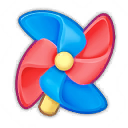

Các vòng lặp giữ chân ngoài màn chơi
Điểm danh, khu trưng bày, đồ giám, thành tựu và panel tự bật khi về Home giữ chân ra sao, và vé cá/vàng có đủ nuôi chúng không.
Tóm tắt
- Điểm danh 7 ngày tự bật (“Lucky Day”) khi sang ngày: tổng một chu kỳ 350 vàng + 2 Lưới + 2 Xoá sạch + 2 Làm mới (SignConfig). Không đọc được luật chuỗi liên tiếp hay phạt bỏ lỡ.
- Vé cá (10003) chính là tiền Tick của khu trưng bày: 14 khu, 147 công trình, giá 10–60 vé, tổng 5.040 vé.
- FishTicketNumber = 10_10_10; 30 vé sau 3 màn thắng khớp 10 vé mỗi màn (suy luận). Với nhịp đó, xây hết 14 khu cần khoảng 504 màn thắng.
- Đồ giám có 418 mục (386 mã cá khác nhau), mỗi mục gắn cứng với một level từ 1 tới 754, chia 5 tab Common 220 / Cool 149 / Rare 25 / Epic 19 / Legendary 5.
- Ba thành tựu trong hồ sơ (First-Try Win, Collection Gallery, Scene Gallery) chỉ là bộ đếm hiển thị, không có phần thưởng nào trong dữ liệu.
- Về Home từ màn chơi thì panel khu trưng bày tự bật (quan sát kể cả sau khi thua ở level 4). Tham số backhome 1_1_6_0 bật luồng quay về Home từ level 6.
- CloudData giữ tickCount, khu đang xem, danh sách công trình và thành tựu, nhưng không giữ tiến độ điểm danh.
Luồng logic (10 bước)
- 1Mở game sang ngày mớiClientSo SIGN_DATA_KEY.LastUpdateSignInDate với ngày hiện tại; khác ngày thì IsSignIn = false, nút Login ở Home hiện chấm đỏ và UIPanelSign (“Lucky Day”) tự bật.
SignData; UIPanelSign.OnInit chuỗi SignIn, SignReward; screenshots/sign_lucky_day.jpg - 2Nhận thưởng ngàyPlayerClaim cộng RewardStr của ngày CurSignIn (ngày 1: 50 vàng), đặt IsSignIn = true, SignCount + 1. Save đo ngay sau khi nhận ngày 1: CurSignIn vẫn 1, LastUpdateSignInDate vẫn 2026-09-12 (CurSignIn có lẽ tăng khi sang ngày — suy luận).
SignConfig.json; playerprefs_2026-10-06.json SIGN_DATA_KEY; vàng 90 → 140 - 3Chơi và thắng mànPlayerMỗi màn thắng cộng vàng GameReward và vé cá (suy luận 10 vé/màn), cập nhật thu thập; loài cá gắn với level đó trong IllustrationConfig được mở và Achievement[2] tăng theo số loài.
UIPanelWin (GameReward, EXHIBITION_DATA_KEY_2); FishTicketNumber 10_10_10; PLAYER_DATA_KEY.Achievement {"2":3} ở level 4 - 4Quay về HomeClientIsBackHome = 1, BackHomeLevel = 6 (suy luận theo offset getter): từ level 6 luồng sau màn đưa người chơi về Home thay vì vào thẳng màn kế. Trên máy, về Home sau khi thua ở level 4 panel khu trưng bày tự bật — nhiều khả năng do đủ vé cho công trình kế tiếp (suy luận).
backhome = 1_1_6_0 → offset 0x72 (get_IsBackHome), 0x74 (get_BackHomeLevel); screenshots/levelend_back_home_exhibition.jpg - 5Đặt công trìnhPlayerUIPanelArchitecture hiện giá Tick (icon vé cá); lần đầu có bàn tay hướng dẫn. Đặt Knight giá 10 vé: vé 30 → 20, ArchitectureIds = [1], công trình dựng ngay trên Home kèm âm thanh riêng Sound_Architecture_*.
ExhibitionArchitectureConfig.Tick, Sound; EXHIBITION_DATA_KEY_2; screenshots/exhibition_place_knight.jpg - 6Theo dõi tiến độ khuClientThanh “Scene Progress n/N” (khu 1 có 5 công trình, tổng 90 vé). Khu kế tiếp hiện xám có ổ khoá; điều kiện mở chưa đọc được.
screenshots/exhibition_progress_1of5.jpg, exhibition_scene_list.jpg - 7Đổi diện mạo màn chơiClientMỗi khu mang LevelBg và LevelBgMask riêng nên tiến độ trang trí đổi luôn nền màn chơi.
ExhibitionConfig.LevelBg, LevelBgMask - 8Xem đồ giámPlayerTab 5 Gallery dựng lưới theo Quality; ô chưa mở hiện bóng đen kèm “Level N” lấy từ IllustrationConfig.LevelID, biến đồ giám thành bản đồ những gì sẽ nhận được nếu chơi tiếp.
UIPanelIllustration; screenshots/illustration_common.jpg - 9Xem thành tựuPlayerKhối Stats trong hồ sơ hiện ba bộ đếm: First-Try Win 0, Collection Gallery 3, Scene Gallery 0 ở level 4. Không có nút nhận thưởng.
AchievementConfig; PLAYER_DATA_KEY.Achievement; screenshots/profile_my_profile.jpg - 10Đồng bộ cloudClientSau màn và giao dịch, GameCloud.UploadCloudArchive đẩy CloudData gồm tickCount, exhibitionId, architectureIds, achievement; SIGN_DATA_KEY không có trong payload.
CloudData 14 trường; GameCloud.UploadCloudArchive
Nhánh & ngoại lệ
| Khi | Thì | Bằng chứng |
|---|---|---|
| Bỏ lỡ nhiều ngày điểm danh | Tài khoản test vắng từ 12/09 tới 06/10 và vẫn nhận ngày 1; chưa đủ dữ liệu để biết bỏ lỡ có reset chu kỳ hay chỉ dừng lại. | SIGN_DATA_KEY 12/09 và 06/10 |
| Chỉnh đồng hồ máy | Chưa thấy luồng điểm danh gọi giờ server (có sẵn API /time và SDKManager.GetServerTimeStatic); nếu dùng giờ máy thì có thể nhận nhiều ngày liên tiếp (suy luận). | gdd/Sign.json gaps; Rank GET /time |
| Không đủ vé cá | Không đặt được công trình; vé chỉ đến từ thắng màn (chưa thấy nguồn khác trong dữ liệu). | gdd/Exhibition.json gaps |
| Đã xây hết 147 công trình | Vé cá không còn chỗ tiêu nào đọc được trong client. | ExhibitionArchitectureConfig.json (147 dòng) |
| Vượt level 754 | Không còn loài mới trong đồ giám; Collection Gallery dừng ở 418. | IllustrationConfig.LevelID tối đa 754 |
| Đổi máy | Khu trưng bày, vé (tickCount, suy luận = vé cá) và thành tựu về lại; tiến độ điểm danh, cờ hướng dẫn mất. | CloudData; gdd/CloudSave.json |
| Server tắt backhome (mặc định 0_0_7_0) | Không có luồng quay về Home tự động; người chơi phải tự về Home mới thấy khu trưng bày (suy luận). | config_default_vs_live.json |
Bốn vòng lặp và đặc điểm
| Vòng lặp | Nhịp | Đầu vào | Phần thưởng / đầu ra | Lưu ở | Cloud |
|---|---|---|---|---|---|
| Điểm danh | 1 lần/ngày, chu kỳ 7 | Mở app | 350 vàng + 6 booster mỗi chu kỳ | SIGN_DATA_KEY | Không |
| Khu trưng bày | Mỗi lần về Home | Vé cá (Tick) | Công trình, đổi nền màn chơi, Scene Gallery | EXHIBITION_DATA_KEY_2 | Có |
| Đồ giám | Theo level | Thắng màn có loài | Ô sáng lên, Collection Gallery | suy ra từ level (suy luận) | Gián tiếp qua level |
| Thành tựu | Theo tiến trình | Thắng lần đầu, sưu tầm | Chỉ bộ đếm hiển thị | PLAYER_DATA_KEY.Achievement | Có |
Điểm danh 7 ngày
Tài liệu tính năng ghi tổng chu kỳ là “1 lưới, 2 xoá sạch, 2 làm mới”; đếm lại SignConfig thì Lưới xuất hiện ở cả ngày 2 và ngày 7 nên là 2 Lưới. Quy theo nhãn giá booster trong màn (480/420/550 vàng, chỉ 480 đã đo), một chu kỳ tương đương khoảng 3.250 vàng (suy luận) — phần lớn giá trị nằm ở booster chứ không phải vàng.
| Ngày | Thưởng | Quy đổi vàng (suy luận) |
|---|---|---|
| 1 | 50Vàng | 50 |
| 2 | 1Lưới bắt cá | 480 |
| 3 | 100Vàng | 100 |
| 4 | 1Xoá sạch | 420 |
| 5 | 200Vàng | 200 |
| 6 |  1Làm mới | 550 |
| 7 | 1Lưới bắt cá 1Xoá sạch 1Làm mới | 1.450 |
Kinh tế vé cá: khu trưng bày kéo dài bao lâu
Cột “màn thắng tích luỹ” giả định 10 vé mỗi màn thắng (FishTicketNumber 10_10_10, khớp 30 vé sau 3 màn — suy luận) và không có nguồn vé nào khác.
| Khu | Tên (gốc) | Công trình | Vé của khu | Vé tích luỹ | Màn thắng tích luỹ |
|---|---|---|---|---|---|
| 1 | 海底宫殿 Ocean Palace | 5 | 90 | 90 | 9 |
| 2 | 海底营地 | 10 | 310 | 400 | 40 |
| 3 | 海底小镇 Ocean Town | 12 | 390 | 790 | 79 |
| 4 | 海底乐园 | 10 | 380 | 1.170 | 117 |
| 5 | 海底市集 | 8 | 310 | 1.480 | 148 |
| 6 | 水上乐园 | 9 | 360 | 1.840 | 184 |
| 7 | 海底丛林 | 11 | 400 | 2.240 | 224 |
| 8 | 海底音乐台 | 11 | 430 | 2.670 | 267 |
| 9 | 游乐场 | 11 | 400 | 3.070 | 307 |
| 10 | 电影院 | 13 | 430 | 3.500 | 350 |
| 11 | 农场 | 12 | 380 | 3.880 | 388 |
| 12 | 话剧制片厂 | 12 | 370 | 4.250 | 425 |
| 13 | 博物馆 | 12 | 400 | 4.650 | 465 |
| 14 | 冰雪世界 | 11 | 390 | 5.040 | 504 |
Đồ giám theo dải level
Mật độ loài mới tăng dần theo dải level nhưng tỉ lệ trên mỗi màn giảm: 19 loài trong 20 màn đầu, 174 loài trải trên 354 màn từ 401 tới 754. Loài hiếm (Quality 4–5) rải từ sớm (1 Epic trong 20 màn đầu) để người chơi sớm thấy cái “đáng sưu tầm”.
| Dải level | Số mục | Common (1) | Cool (2) | Rare (3) | Epic (4) | Legendary (5) |
|---|---|---|---|---|---|---|
| 1–20 | 19 | 17 | 0 | 1 | 1 | 0 |
| 21–50 | 23 | 8 | 13 | 1 | 0 | 1 |
| 51–100 | 34 | 20 | 11 | 1 | 2 | 0 |
| 101–200 | 68 | 38 | 24 | 4 | 2 | 0 |
| 201–400 | 100 | 55 | 32 | 4 | 7 | 2 |
| 401–754 | 174 | 82 | 69 | 14 | 7 | 2 |
Nhận xét kinh tế tổng thể
- Vé cá có đúng một chỗ tiêu, nên nó là tiền tệ “tiến bộ” sạch: không bán, không mua, không lẫn với vàng. Đây là lựa chọn tốt cho cảm giác công bằng.
- Giá công trình phẳng (10–60 vé, phần lớn 20–40) trong khi thu nhập vé không đổi theo level, nên từ khu 2 trở đi mỗi khu cần 31–43 màn thắng (khu 1 chỉ 9) — nhịp đều, không tăng dần, dễ đoán và cũng dễ chán (suy luận).
- Vàng ngoài màn chỉ đến từ điểm danh (350 vàng/tuần) và thắng màn; không có thưởng vàng nào từ khu trưng bày, đồ giám hay thành tựu, nên meta không giúp người chơi mua booster/hồi sinh.
- Ba mốc cạn nội dung meta: khu trưng bày khoảng màn thắng thứ 504, đồ giám ở level 754, nội dung màn ở level 1.300. Khoảng 550 màn cuối chỉ còn màn chơi và bảng xếp hạng.
Số liệu chính
| Chỉ số | Giá trị | Nguồn |
|---|---|---|
| Thưởng một chu kỳ điểm danh | 350 vàng + 2 Lưới + 2 Xoá sạch + 2 Làm mới | SignConfig.json |
| Khu trưng bày | 14 khu · 147 công trình · 5.040 vé | ExhibitionConfig.json; ExhibitionArchitectureConfig.json |
| Giá công trình | 10–60 vé (30 vé: 46 công trình, 40: 40, 20: 31, 50: 16, 60: 10, 10: 4) | gdd/Exhibition.json |
| Vé cá mỗi màn thắng | 10 (suy luận) | FishTicketNumber 10_10_10; 30 vé sau 3 màn |
| Màn thắng để xây hết | ≈ 504 (suy luận) | 5.040 / 10 |
| Đồ giám | 418 mục, 386 mã cá, level 1–754 | IllustrationConfig.json |
| Thành tựu | 3, không thưởng | AchievementConfig.json |
| backhome | live 1_1_6_0 · mặc định 0_0_7_0 | config_default_vs_live.json |
Đánh giá
Thang 1–5 (với tiêu chí rủi ro, 5 = rủi ro cao). Trung bình: 3.0.
| Tiêu chí | Điểm | Nhận xét |
|---|---|---|
| Giữ chân ngày (D1–D7) | 3/5 | Điểm danh tự bật và có booster, nhưng không có chuỗi, không có thưởng tăng dần sau tuần đầu. |
| Mục tiêu dài hạn | 3/5 | Khu trưng bày và đồ giám tạo đích rõ cho 500–750 level đầu; sau đó trống. |
| Động lực từ phần thưởng | 2/5 | Đồ giám và thành tựu không thưởng gì; khu trưng bày chỉ thưởng bằng hình ảnh. |
| Liên kết với vòng chơi chính | 4/5 | Vé cá đến từ thắng màn, khu trưng bày đổi nền màn chơi, panel tự bật khi về Home — vòng lặp khép kín. |
| An toàn dữ liệu khi đổi máy | 3/5 | Khu trưng bày và thành tựu đi theo cloud; điểm danh thì không. |
- Một tiền tệ tiến bộ riêng (vé cá) với một chỗ tiêu duy nhất, dễ hiểu ngay từ level 1–3.
- Ô đồ giám khoá ghi rõ level mở — một cách rẻ để cho người chơi thấy lộ trình.
- Panel khu trưng bày tự bật biến mỗi lần về Home thành một khoảnh khắc thưởng.
- Không có hệ thống ngày thứ 8 trở đi (chuỗi, tháng, mốc 30 ngày).
- Đồ giám và thành tựu không có phần thưởng, kể cả khi hoàn thành một tab Quality.
- Không có nguồn vé ngoài thắng màn; người chơi kẹt ở một màn khó thì meta cũng đứng.
- Sau khi hết khu trưng bày, vé cá tích luỹ vô dụng; người chơi lâu năm mất lý do mở panel nào ngoài nút Level.
- Panel tự bật mỗi lần về Home có thể gây phiền nếu người chơi không đủ vé (cần kiểm chứng điều kiện bật).
- Thêm mốc thưởng cho đồ giám (hoàn tất mỗi tab Quality, mỗi 50 loài) và cho thành tựu (vàng/booster theo bậc).
- Thêm chỗ tiêu vé dài hạn sau khu 14: nâng cấp công trình, khu mùa giới hạn thời gian, hoặc đổi vé lấy booster theo tỉ giá cố định.
- Biến điểm danh thành chuỗi tăng dần (ngày 7 lớn hơn, tuần 2–4 có thưởng khác) và đưa SIGN_DATA_KEY vào CloudData.
- Cho FishTicketNumber khác nhau theo độ khó màn (ví dụ 8/10/15) để thưởng màn khó, tận dụng ba trường đã có sẵn.
Liên quan
Điểm danh 7 ngày Khu trưng bày Đồ giám cá Thành tựu Kinh tế: mạng, vàng, vé cá Hồ sơ, tên và trang phục Lưu trữ đám mây Khung giao diện 📊 Hai sự kiện đua FishRace và FlyRace 📊 Điểm chạm kiếm tiền trong màn chơi 📊 17 tham số online của ZMYSDK
Nguồn đã đọc
gdd/Sign.json, gdd/Exhibition.json, gdd/Illustration.json, gdd/Achievement.json, gdd/Economy.json, gdd/CloudSave.jsonappendix/default-configs.mdfeature_extras.json (Sign, Exhibition, Illustration, Achievement, Economy, Profile, CloudSave)facts/runtime/decoded/playerprefs.json, playerprefs_2026-10-06.json, config_default_vs_live.jsonConfigs/Default/SignConfig.json, ExhibitionConfig.json, ExhibitionArchitectureConfig.json, IllustrationConfig.json, AchievementConfig.jsonfeatures/UIPanelSign.md, UIPanelExhibition.md, UIPanelArchitecture.md, UIPanelIllustration.md, UIPanelWin.md, SDKManager.mdPseudoC/Assembly-CSharp/SDKManager.c (jmv{¶ – backhome; getter IsBackHome/BackHomeLevel/IsShowExhibition)